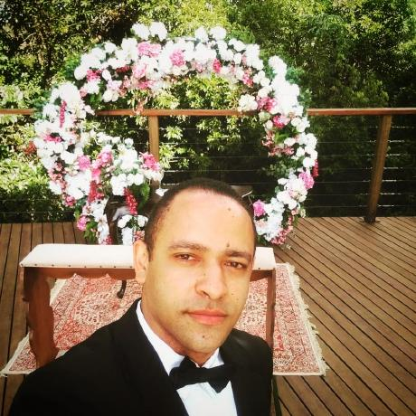

Controle Financeiro
Aplicação para gerenciamento financeiro que permite cadastrar receitas e despesas, calcular o saldo automaticamente e armazenar os dados no navegador utilizando LocalStorage.
Tecnologias: HTML, CSS, JavaScript e React
Estudante de Análise e Desenvolvimento de Sistemas, transformando aprendizado em soluções através da tecnologia.

Sou estudante de Análise e Desenvolvimento de Sistemas e estou em constante aprendizado na área de desenvolvimento web. Tenho interesse em criar aplicações modernas utilizando HTML, CSS e JavaScript, buscando sempre evoluir meus conhecimentos e desenvolver soluções práticas por meio da tecnologia.
Aplicação para gerenciamento financeiro que permite cadastrar receitas e despesas, calcular o saldo automaticamente e armazenar os dados no navegador utilizando LocalStorage.
Tecnologias: HTML, CSS, JavaScript e React
Solar System App é uma aplicação que proporciona uma exploração interativa dos oito planetas do nosso sistema solar, juntamente com informações detalhadas sobre vinte missões espaciais históricas. Essa experiência é obtida através da integração com uma API usando a biblioteca React.
Tecnologias: HTML, CSS, JavaScript e React